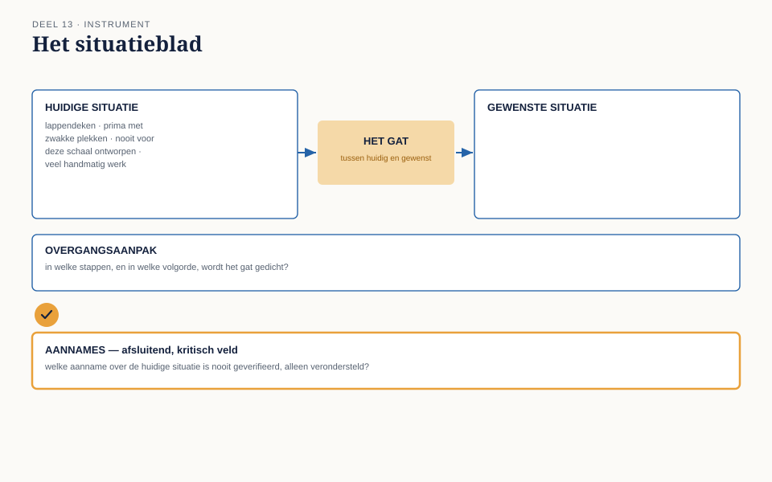

Deel 13 — Strategieanalyse in de praktijk
Slidedeck · Ductus-cursus Business-analyse · niveau 2 · deel 13 van 30 · 22 slides
Slide 1 — Titel
Business-analyse — deel 13 Strategieanalyse in de praktijk
Slide 2 — Terugblik
Aanpak (deel 11) en governance (deel 12) staan.
Vandaag zoomen we uit: waarom bestaat dit programma eigenlijk?
Slide 3 — Vier antwoorden op één vraag
Iris: “Een lappendeken van deeloplossingen.” Hanneke: “Werkt prima, met een paar zwakke plekken.” Bram: “Nooit voor deze schaal ontworpen.” Ruud: “Klantenservice doet nog veel handmatig werk.”
Slide 4 — Geen van allen ongelijk
Geen van vier compleet. Niet onderling consistent genoeg voor één programma.
Slide 5 — Waar we het over gaan hebben
- De huidige situatie: verifieerbaar, niet aannemelijk
- De gewenste situatie en het gat
- Risico’s en randvoorwaarden
- Het situatieblad
Slide 6 — Verifieerbaar versus aannemelijk
“Lappendeken” is een oordeel.
“Vier van de zes mutatietypen via afzonderlijke, niet-geïntegreerde oplossingen” is een beschrijving.
Slide 7 — [Opdracht 1]
Cijfers van Nour. Welke van de vier uitspraken wordt bevestigd — en welke niet?
Slide 8 — De gewenste situatie
“Een moderne, geïntegreerde keten” — dezelfde fout als de vage doelstelling uit niveau 1.
Concreet gedrag, net als de veranderregel.
Slide 9 — Het gat
Wat moet er gebeuren om van huidig naar gewenst te komen.
Niet één ding — meerdere deelgaten.
Slide 10 — Vier deelgaten
Technisch · Organisatorisch · Kennis · Capaciteit
Slide 11 — [Opdracht 3]
Splits het gat voor het zesde mutatietype uit naar de vier deelgaten.
Slide 12 — Risico’s
Wat kan de overgang vertragen, duurder maken, of laten mislukken?
Slide 13 — Randvoorwaarden
Wat staat al vast — budget, capaciteit, contracten?
Slide 14 — Niet altijd scherp te scheiden
Een krap budget: randvoorwaarde én risico.
Beide apart benoemen voorkomt dat één ervan onopgemerkt blijft.
Slide 15 — [Opdracht 2]
De architectuurgrens van Bram: randvoorwaarde, risico, of beide?
Slide 16 — De werkvorm van dit deel
Het situatieblad
Huidig · Gewenst · Het gat · Risico’s en randvoorwaarden
Slide 17 — Het blad
Huidige situatie, verifieerbaar Gewenste situatie, concreet Het gat, uitgesplitst Overgangsaanpak
Slide 18 — Het veld dat het verschil maakt
Welke aanname over de huidige situatie is nooit geverifieerd, alleen verondersteld?
Slide 19 — Een bekend patroon, nu op strategisch niveau
Niveau 1, deel 3: de ongestelde vraag. Niveau 1, deel 6: de tegencheck. Niveau 1, deel 9: het afbreekcriterium.
Nu: de niet-geverifieerde startaanname.
Slide 20 —

Het situatieblad — huidig en gewenst, met het gat ertussen
Slide 21 — Terug naar de casus
Vier indrukken waren geen verspilde tijd — het beginmateriaal, getoetst aan Nours cijfers.
Slide 22 — Volgende keer
Het gat staat scherp. Nu het daadwerkelijk ophalen van wat nodig is om het te dichten.
Deel 14: elicitatie I — voorbereiden, uitvoeren, bevestigen.